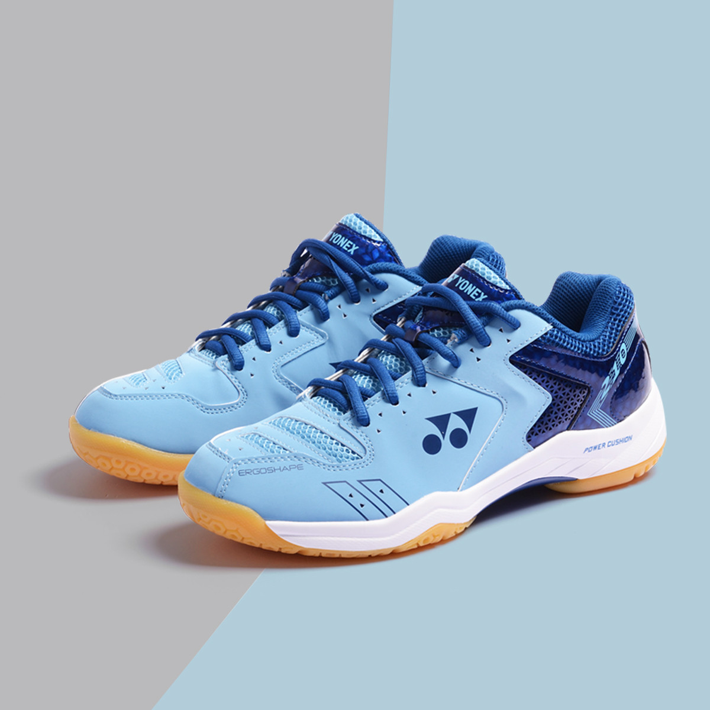

羽球鞋BADMINTON SHOES
羽毛球场地通常是塑胶地板和木地板。至于木板和塑胶场地则各有千秋，木板地比较容易因潮湿或比赛时选手所流下的汗造成场地湿滑，而塑胶场地不仅与木板地同样具有弹性，同时具有吸震和防滑能力，因此国际比赛都采用塑胶场地做比赛场地。

总体来说，穿着专业羽毛球鞋主要有以下优点：
- 防滑性能
- 缓震、缓冲击性能
- 耐磨性能
- 保护性能
羽毛球鞋第一性能是鞋底的防滑性。
羽毛球场地绝大多数情况下是在木地板上使用，材料中，生胶是最好且没有什么替代品的制鞋底的材料。生胶的质量是有不同等级的，同样是黄色，也不是完全相同。因为加工时候的杂质和添料不同。

缓震、缓冲击性能。
一般的鞋是靠鞋垫来解决的，有些厂家采用了加厚的鞋垫，但由于羽毛球运动的急起急停很剧烈，所以好一点的鞋要在这方面再花点心思。

专业使用的耐磨性。
羽毛球运动显著特点的步法正确后，左脚（右手习惯的人）前内侧由于拖动较多，磨损特别厉害，专业的羽毛球鞋在这方面有专门的设计来避免磨损。
舒服和对脚的保护性。
鞋合脚的问题，也跟材料有关，大家都有体会，新的皮鞋完全没有旧皮鞋穿了舒服，那是因为用时间长了真皮会自动变形适合自己的脚形。
球鞋选购要点：
- 鞋底材质。选择时注意鞋底最好采用牛筋底，这样韧性会比较好，适合在室内运动。如在室外，可选择高级的橡皮合成鞋底。羽球鞋的鞋底大都由生胶或人工橡胶所合成，生胶的鞋底因抓地力强所以适合于木板场地，因此排球鞋都可当羽排两用鞋。高档的羽毛球鞋多数采用复合生胶材料，前后脚掌接触地面的部分采用生胶，增强鞋子的抓地性能。
- 球鞋大小。羽毛球鞋穿上时要合脚，不能太大也不能太小，这样一来可助你在运动中的发挥，二来可以减少你受伤的机会。